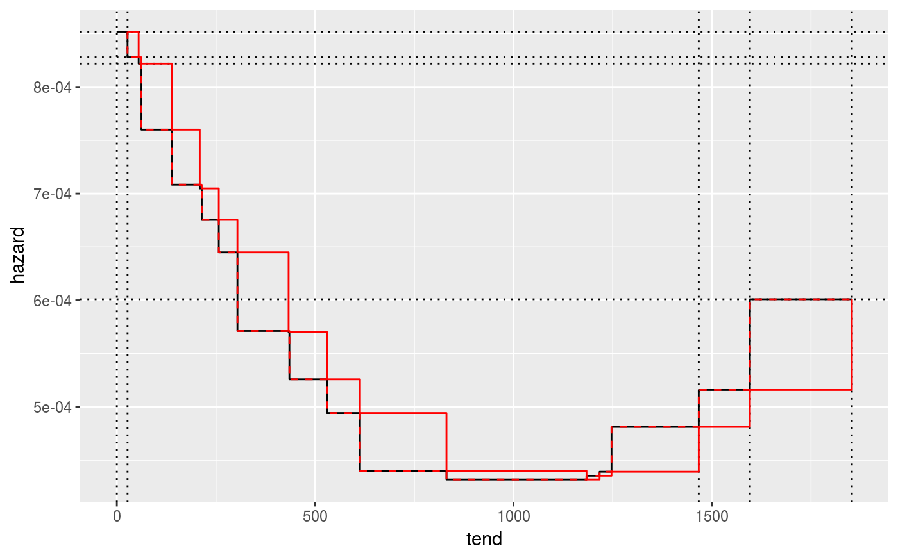
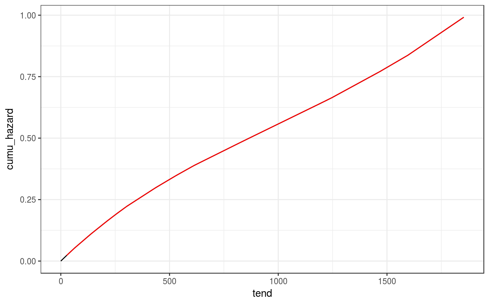
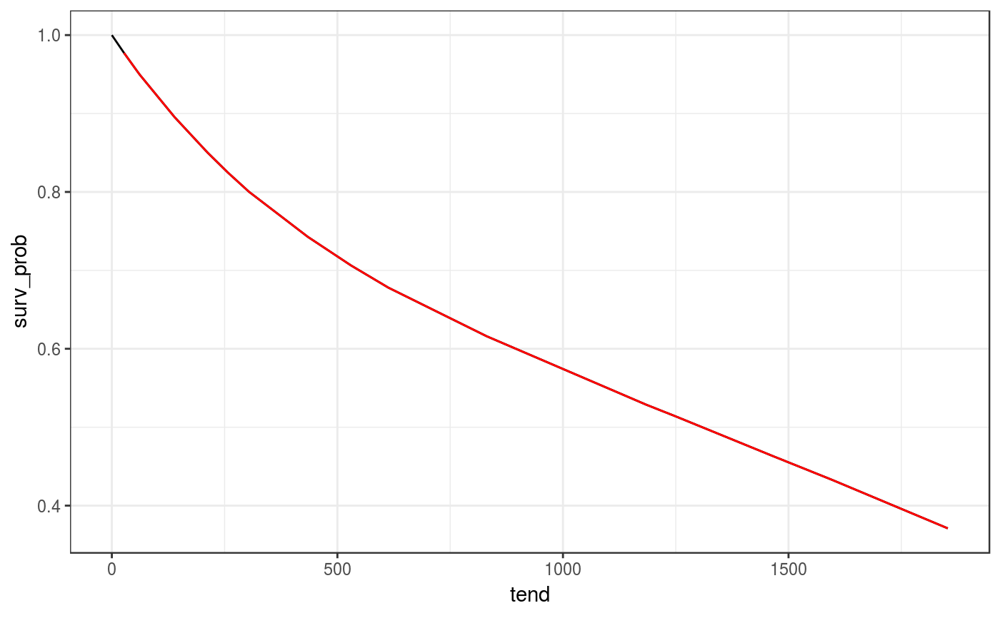

geom_hazard is an extension of the geom_line, and
is optimized for (cumulative) hazard plots. Essentially, it adds a (0,0)
row to the data, if not already the case. Stolen from the
RmcdrPlugin.KMggplot2 (slightly modified).
geom_hazard(mapping = NULL, data = NULL, stat = "identity", position = "identity", na.rm = FALSE, show.legend = NA, inherit.aes = TRUE, ...) geom_stephazard(mapping = NULL, data = NULL, stat = "identity", position = "identity", direction = "vh", na.rm = FALSE, show.legend = NA, inherit.aes = TRUE, ...) geom_surv(mapping = NULL, data = NULL, stat = "identity", position = "identity", na.rm = FALSE, show.legend = NA, inherit.aes = TRUE, ...)
| mapping | Set of aesthetic mappings created by |
|---|---|
| data | The data to be displayed in this layer. There are three options: If A A |
| stat | The statistical transformation to use on the data for this layer, as a string. |
| position | Position adjustment, either as a string, or the result of a call to a position adjustment function. |
| na.rm | If |
| show.legend | logical. Should this layer be included in the legends?
|
| inherit.aes | If |
| ... | Other arguments passed on to |
| direction | direction of stairs: 'vh' for vertical then horizontal, or 'hv' for horizontal then vertical. |
library(ggplot2) library(pammtools) ped <- tumor[10:50,] %>% as_ped(Surv(days, status)~1) pam <- mgcv::gam(ped_status ~ s(tend), data=ped, family = poisson(), offset = offset) ndf <- make_newdata(ped, tend = unique(tend)) %>% add_hazard(pam) # piece-wise constant hazards ggplot(ndf, aes(x = tend, y = hazard)) + geom_vline(xintercept = c(0, ndf$tend[c(1, (nrow(ndf)-2):nrow(ndf))]), lty = 3) + geom_hline(yintercept = c(ndf$hazard[1:3], ndf$hazard[nrow(ndf)]), lty = 3) + geom_stephazard() + geom_step(col=2) + geom_step(col=2, lty = 2, direction="vh")# comulative hazard ndf <- ndf %>% add_cumu_hazard(pam) ggplot(ndf, aes(x = tend, y = cumu_hazard)) + geom_hazard() + geom_line(col=2) # doesn't start at (0, 0)# survival probability ndf <- ndf %>% add_surv_prob(pam) ggplot(ndf, aes(x = tend, y = surv_prob)) + geom_surv() + geom_line(col=2) # doesn't start at c(0,1)